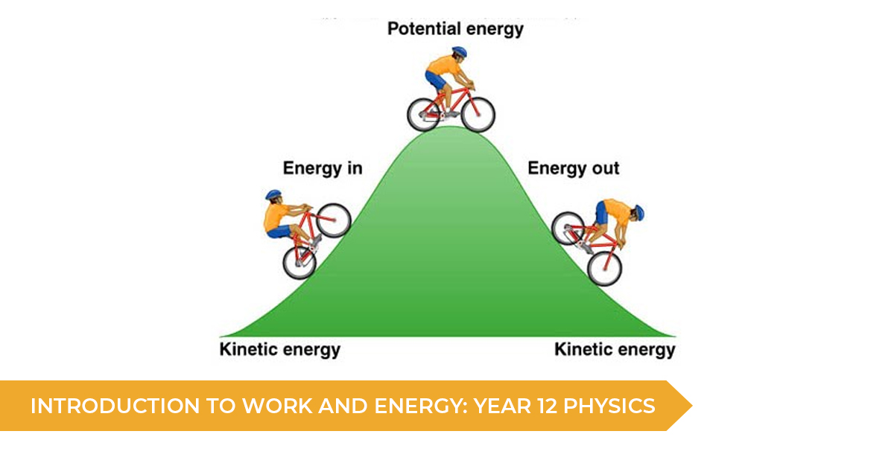

<!DOCTYPE html>
<html>
<title>MCQ</title>
<link rel="stylesheet" type="text/css" href="../Physics/style.css">
<script src="../Physics/logic.js"></script>

</html>


<ul class="quiz">
    <li>
        <h1>Energy Stores</h1>
        
        
        <style>
            .logo {
                position: absolute;
                top: -50px;
                left: 0;
                margin: 10px;
            }

            .image4 {
                position: absolute;
                top: 150px;
                right: 90px;
                margin: 10px;
            }
        </style>
        <h4>What is the unit of Energy</h4>
        <ul class="choices">
            <li>
                <label><input type="radio" name="physics_mc4_question0" value="A" /><span>Watts</span></label>
            </li>
            <li>
                <label><input type="radio" name="physics_mc4_question0" value="B" /><span>Newton</span></label>
            </li>
            <li>
                <label><input type="radio" name="physics_mc4_question0" value="C" /><span>Joule</span></label>
            </li>
        </ul>
    </li>
    <li>
        <h4>The energy in which store increases as a car moves faster?</h4>
        <ul class="choices">
            <li>
                <label><input type="radio" name="physics_mc4_question1" value="A" /><span>Gravitational potential
                        energy</span></label>
            </li>
            <li>
                <label><input type="radio" name="physics_mc4_question1" value="B" /><span>Thermal energy</span></label>
            </li>
            <li>
                <label><input type="radio" name="physics_mc4_question1" value="C" /><span>Chemical energy</span></label>
            </li>
            <li>
                <label><input type="radio" name="physics_mc4_question1" value="D" /><span>Kinetic Energy</span></label>
            </li>
        </ul>
    </li>
    <li>
        <h4>The energy in which store decreases as a candle burns?</h4>
        <ul class="choices">
            <li>
                <label><input type="radio" name="physics_mc4_question2" value="A" /><span>Chemical energy
                        store</span></label>
            </li>
            <li>
                <label><input type="radio" name="physics_mc4_question2" value="B" /><span>Kinetic energy
                        store</span></label>
            </li>
            <li>
                <label><input type="radio" name="physics_mc4_question2" value="C" /><span>Nuclear energy
                        store</span></label>
            </li>
        </ul>
    </li>
</ul>
<button class="view-results" onclick="returnScore()">View Results</button>
<span id="myresults" class="my-results">My results will appear here</span>
<br>
<br>
<div>
    <a href="../Physics/PMC.html">Back to the Multiple Choice Menu</a>
</div>
<div style="text-align: right;">
    <a href="../Physics/MultipleChoice5.html">Next</a>
</div>